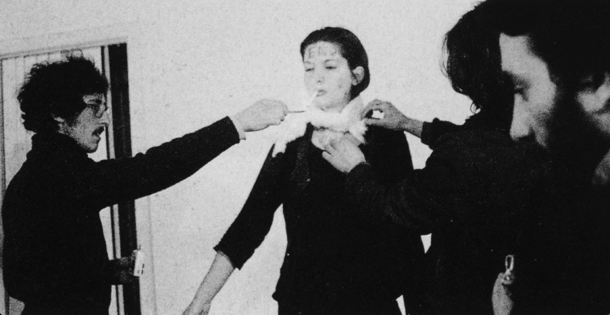
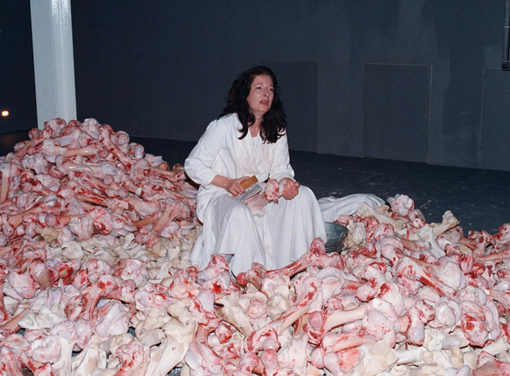

核心作品玛丽娜·阿布拉莫维奇 · Marina Abramović
核心作品
Selected Works
WORK 01

《韵律0》，行为艺术
那不勒斯，1974
那不勒斯，1974
《韵律0》
Rhythm 0 · 1974
地点：那不勒斯时长：6小时
桌上摆放76件物品——玫瑰、蜂蜜、剪刀、刀、一把上膛的手枪。她站在那里，任由观众对她做任何事。六小时后，当她作为人而非道具重新出现时，施暴者四散逃离。她当晚长出白发。
WORK 02
《情人·长城行走》，行为艺术，中国长城，1988
《情人·长城行走》
The Lovers · The Great Wall Walk · 1988
路程：2500公里历时：90天与乌雷合作
她从山海关出发，乌雷从嘉峪关出发，在陕西神木汇合，然后分手。为进入当时封闭的中国，从1984年开始争取，历时四年。项目结束三个月后，中国正式对外开放。
WORK 03

《巴尔干巴洛克》，行为装置，威尼斯双年展，1997
《巴尔干巴洛克》
Balkan Baroque · 1997
地点：威尼斯双年展时长：4天×6小时金狮奖
她在2500根带血牛骨中坐下，边清洗骨头边唱南斯拉夫民谣。前南斯拉夫战争正酣。这是挽歌，是控诉，也是对一个已消亡的祖国的哀悼。
P.03
核心作品玛丽娜·阿布拉莫维奇 · Marina Abramović
必须知道的作品 · Spotlight
《艺术家在现场》
The Artist Is Present · 2010 · MoMA, New York
《艺术家在现场》，行为艺术，MoMA纽约，2010
2010年，她在MoMA大厅中央放一张桌子，坐下来，然后在整整三个月里每天重复这个动作。任何观众都可以在她对面坐下，和她对视，不限时间。排队的人绕满整个街区，坐下后大哭的人比比皆是。
当年分手多年的乌雷以普通观众身份排队入场，坐到她对面——玛丽娜睁开眼睛，当场破例伸出双手。那场展览打破MoMA历史观展纪录。
当年分手多年的乌雷以普通观众身份排队入场，坐到她对面——玛丽娜睁开眼睛，当场破例伸出双手。那场展览打破MoMA历史观展纪录。
736
对坐者人数
3
个月连续
50+
年创作生涯
方法论
她开创"阿布拉莫维奇方法"（Abramović Method）——通过静止、凝视、极简动作训练感知力，训练人对"当下时刻"的承受力。现通过MAI研究院向全球开放工作坊。

Cleaning the House工作坊现场
Marina Abramović Institute，希腊卡耶斯，2023
Marina Abramović Institute，希腊卡耶斯，2023

阿布拉莫维奇方法（Abramović Method）工作坊
MAI，纽约，2014
MAI，纽约，2014
P.04